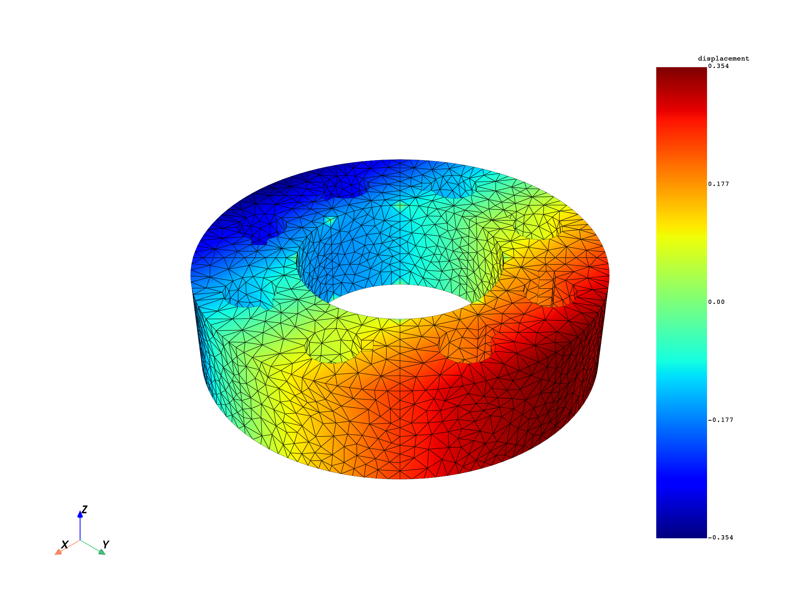

Note
Go to the end to download the full example code.
Understand cyclic expansion of results#
MAPDL
Learn how DPF handles cyclic symmetry data and the different cyclic expansion modes.
When a model possesses cyclic symmetry, only one sector (the base sector) is solved.
DPF can read these results in different ways depending on the read_cyclic option
passed to a result operator. This tutorial demonstrates the four modes available
(0, 1, 2, 3) and shows how to perform phase sweeping on the expanded
results.
Import modules and load the model#
Import the required modules and create a |Model| from the built-in cyclic symmetry example file.
# Import the ansys.dpf.core module
from ansys.dpf import core as dpf
# Import the examples module
from ansys.dpf.core import examples
# Get the path to the cyclic result file
result_url = examples.download_modal_cyclic_complex()
# Create the Model
my_model = dpf.Model(data_sources=result_url)
print(my_model)
DPF Model
------------------------------
Modal analysis
Unit system: MKS: m, kg, N, s, V, A, degC
Physics Type: Mechanical
Available results:
- node_orientations: Nodal Node Euler Angles
- displacement: Nodal Displacement
------------------------------
DPF Meshed Region:
3657 nodes
1971 elements
Unit: m
With solid (3D) elements
------------------------------
DPF Time/Freq Support:
Number of sets: 20
With complex values
Cumulative Frequency (Hz) LoadStep Substep Harmonic index
1 4835.762046 1 1 0.000000
2 -4835.762046 1 2 0.000000
3 7234.790337 1 3 0.000000
4 -7234.790337 1 4 0.000000
5 6392.626554 2 1 1.000000
6 -6392.626554 2 2 1.000000
7 6392.626555 2 3 1.000000
8 -6392.626555 2 4 1.000000
9 10393.671212 3 1 2.000000
10 -10393.671212 3 2 2.000000
11 10393.671229 3 3 2.000000
12 -10393.671229 3 4 2.000000
13 20590.278527 4 1 3.000000
14 -20590.278527 4 2 3.000000
15 20590.278562 4 3 3.000000
16 -20590.278562 4 4 3.000000
17 29384.351699 5 1 4.000000
18 -29384.351699 5 2 4.000000
19 30633.687681 5 3 4.000000
20 -30633.687681 5 4 4.000000
Explore the cyclic metadata#
A cyclic model exposes a
CyclicSupport that
provides the number of sectors, node counts on the base sector, and the
mapping between low and high boundary nodes.
The |TimeFreqSupport| describes how solution sets map to harmonic indices and mode numbers.
# Get the TimeFreqSupport. In this model we have a damped, cyclic, modal analysis.
# Therefore, mode shapes are complex. The model spans 45º, therefore there are 8
# sectors and harmonic indices range from 0 to 4. The MAPDL analysis has been run
# ensuring that we extract 4 cyclic modes per harmonic index and all harmonic
# indices, this means 5*4 = 20 solution sets, so 10 real-imaginary combinations.
# In the print of the TimeFreqSupport we can see the 20 solution sets, and by default
# only the imaginary part of the frequency is printed. Each LoadStep is a harmonic
# index and each substep represents a cyclic mode for each one of them. For both
# harmonic indices 0 and 4, modes are standalone, whereas for the intermediate
# indices modes come in pairs.
tfs = my_model.metadata.time_freq_support
print(tfs)
DPF Time/Freq Support:
Number of sets: 20
With complex values
Cumulative Frequency (Hz) LoadStep Substep Harmonic index
1 4835.762046 1 1 0.000000
2 -4835.762046 1 2 0.000000
3 7234.790337 1 3 0.000000
4 -7234.790337 1 4 0.000000
5 6392.626554 2 1 1.000000
6 -6392.626554 2 2 1.000000
7 6392.626555 2 3 1.000000
8 -6392.626555 2 4 1.000000
9 10393.671212 3 1 2.000000
10 -10393.671212 3 2 2.000000
11 10393.671229 3 3 2.000000
12 -10393.671229 3 4 2.000000
13 20590.278527 4 1 3.000000
14 -20590.278527 4 2 3.000000
15 20590.278562 4 3 3.000000
16 -20590.278562 4 4 3.000000
17 29384.351699 5 1 4.000000
18 -29384.351699 5 2 4.000000
19 30633.687681 5 3 4.000000
20 -30633.687681 5 4 4.000000
Get the CyclicSupport from the ResultInfo. The CyclicSupport allows to understand the cyclic information of the model. We can see that we have only 1 stage with 8 sectors (45º), 3657 nodes on each sector and high/low boundaries with 217 nodes.
cyc_sup = my_model.metadata.result_info.cyclic_support
print(cyc_sup)
# Print the number of stages and sectors
print(f"Number of stages: {cyc_sup.num_stages}")
print(f"Number of sectors (stage 0): {cyc_sup.num_sectors(stage_num=0)}")
# Print the number of boundary nodes (low-high map)
low_high = cyc_sup.low_high_map(stage_num=0)
print(f"Number of boundary nodes: {len(low_high.scoping)}")
DPF Cyclic Support:
with 1 stages:
- stage 0: 8 sectors,
with 3657 nodes and 1971 elements in the base sector
Number of stages: 1
Number of sectors (stage 0): 8
Number of boundary nodes: 217
Read cyclic mode 0 - ignore cyclic symmetry#
With read_cyclic=0, cyclic symmetry is completely ignored. DPF reads the
base and duplicate sector data together into a single |Field| per solution set.
Each Field contains data for all nodes stored in the file (base + duplicate
sector, hence each Field has information for 3657*2 = 7314 nodes). Results are
extracted at all solution sets. As the solutions are complex, and the information
in the time scoping pin represents a cumulative id, if we want to read all we
need to pass 1, 2, … 20/2 ids.
# Create the displacement X operator
disp_op = dpf.operators.result.displacement_X()
disp_op.inputs.streams_container.connect(my_model.metadata.streams_provider)
disp_op.inputs.read_cyclic.connect(0)
disp_op.inputs.time_scoping.connect(list(range(1, len(tfs.time_frequencies) // 2 + 1)))
disp_rc0 = disp_op.outputs.fields_container()
print("read_cyclic=0:")
print(disp_rc0)
read_cyclic=0:
DPF displacement(s)Fields Container
with 20 field(s)
defined on labels: complex time
with:
- field 0 {complex: 0, time: 1} with Nodal location, 1 components and 7314 entities.
- field 1 {complex: 1, time: 1} with Nodal location, 1 components and 7314 entities.
- field 2 {complex: 0, time: 2} with Nodal location, 1 components and 7314 entities.
- field 3 {complex: 1, time: 2} with Nodal location, 1 components and 7314 entities.
- field 4 {complex: 0, time: 3} with Nodal location, 1 components and 7314 entities.
- field 5 {complex: 1, time: 3} with Nodal location, 1 components and 7314 entities.
- field 6 {complex: 0, time: 4} with Nodal location, 1 components and 7314 entities.
- field 7 {complex: 1, time: 4} with Nodal location, 1 components and 7314 entities.
- field 8 {complex: 0, time: 5} with Nodal location, 1 components and 7314 entities.
- field 9 {complex: 1, time: 5} with Nodal location, 1 components and 7314 entities.
- field 10 {complex: 0, time: 6} with Nodal location, 1 components and 7314 entities.
- field 11 {complex: 1, time: 6} with Nodal location, 1 components and 7314 entities.
- field 12 {complex: 0, time: 7} with Nodal location, 1 components and 7314 entities.
- field 13 {complex: 1, time: 7} with Nodal location, 1 components and 7314 entities.
- field 14 {complex: 0, time: 8} with Nodal location, 1 components and 7314 entities.
- field 15 {complex: 1, time: 8} with Nodal location, 1 components and 7314 entities.
- field 16 {complex: 0, time: 9} with Nodal location, 1 components and 7314 entities.
- field 17 {complex: 1, time: 9} with Nodal location, 1 components and 7314 entities.
- field 18 {complex: 0, time: 10} with Nodal location, 1 components and 7314 entities.
- field 19 {complex: 1, time: 10} with Nodal location, 1 components and 7314 entities.
Read cyclic mode 1 - read as cyclic without expansion (default)#
With read_cyclic=1 (the default), DPF reads the data as cyclic and splits
results into base sector (base_sector=1) and duplicate sector
(base_sector=0) Fields, hence, each Field has 3657 nodes. Harmonic indices
without a duplicate sector (e.g., first HI = 0) only have the base sector Field,
we have then 10*2*2 - 2*2*2 = 32 Fields (we lack the 8 combinations between
base_sector = 0 and time = 1,2,3,4.
# Set read_cyclic to 1
disp_op.inputs.read_cyclic.connect(1)
disp_rc1 = disp_op.outputs.fields_container()
print("read_cyclic=1:")
print(disp_rc1)
read_cyclic=1:
DPF displacement(s)Fields Container
with 32 field(s)
defined on labels: base_sector complex time
with:
- field 0 {complex: 0, base_sector: 1, time: 1} with Nodal location, 1 components and 3657 entities.
- field 1 {complex: 1, base_sector: 1, time: 1} with Nodal location, 1 components and 3657 entities.
- field 2 {complex: 0, base_sector: 1, time: 2} with Nodal location, 1 components and 3657 entities.
- field 3 {complex: 1, base_sector: 1, time: 2} with Nodal location, 1 components and 3657 entities.
- field 4 {complex: 0, base_sector: 1, time: 3} with Nodal location, 1 components and 3657 entities.
- field 5 {complex: 1, base_sector: 1, time: 3} with Nodal location, 1 components and 3657 entities.
- field 6 {complex: 0, base_sector: 1, time: 4} with Nodal location, 1 components and 3657 entities.
- field 7 {complex: 1, base_sector: 1, time: 4} with Nodal location, 1 components and 3657 entities.
- field 8 {complex: 0, base_sector: 1, time: 5} with Nodal location, 1 components and 3657 entities.
- field 9 {complex: 1, base_sector: 1, time: 5} with Nodal location, 1 components and 3657 entities.
- field 10 {complex: 0, base_sector: 1, time: 6} with Nodal location, 1 components and 3657 entities.
- field 11 {complex: 1, base_sector: 1, time: 6} with Nodal location, 1 components and 3657 entities.
- field 12 {complex: 0, base_sector: 1, time: 7} with Nodal location, 1 components and 3657 entities.
- field 13 {complex: 1, base_sector: 1, time: 7} with Nodal location, 1 components and 3657 entities.
- field 14 {complex: 0, base_sector: 1, time: 8} with Nodal location, 1 components and 3657 entities.
- field 15 {complex: 1, base_sector: 1, time: 8} with Nodal location, 1 components and 3657 entities.
- field 16 {complex: 0, base_sector: 1, time: 9} with Nodal location, 1 components and 3657 entities.
- field 17 {complex: 1, base_sector: 1, time: 9} with Nodal location, 1 components and 3657 entities.
- field 18 {complex: 0, base_sector: 1, time: 10} with Nodal location, 1 components and 3657 entities.
- field 19 {complex: 1, base_sector: 1, time: 10} with Nodal location, 1 components and 3657 entities.
- field 20 {complex: 0, base_sector: 0, time: 5} with Nodal location, 1 components and 3657 entities.
- field 21 {complex: 1, base_sector: 0, time: 5} with Nodal location, 1 components and 3657 entities.
- field 22 {complex: 0, base_sector: 0, time: 6} with Nodal location, 1 components and 3657 entities.
- field 23 {complex: 1, base_sector: 0, time: 6} with Nodal location, 1 components and 3657 entities.
- field 24 {complex: 0, base_sector: 0, time: 7} with Nodal location, 1 components and 3657 entities.
- field 25 {complex: 1, base_sector: 0, time: 7} with Nodal location, 1 components and 3657 entities.
- field 26 {complex: 0, base_sector: 0, time: 8} with Nodal location, 1 components and 3657 entities.
- field 27 {complex: 1, base_sector: 0, time: 8} with Nodal location, 1 components and 3657 entities.
- field 28 {complex: 0, base_sector: 0, time: 9} with Nodal location, 1 components and 3657 entities.
- field 29 {complex: 1, base_sector: 0, time: 9} with Nodal location, 1 components and 3657 entities.
- field 30 {complex: 0, base_sector: 0, time: 10} with Nodal location, 1 components and 3657 entities.
- field 31 {complex: 1, base_sector: 0, time: 10} with Nodal location, 1 components and 3657 entities.
Read cyclic mode 2 - expand without merging stages#
With read_cyclic=2, DPF performs the full cyclic expansion. The result
Fields now contain the data for all sectors assembled into the full 360-degree
model. Stages are kept separate (relevant for multi-stage models). In this
case we obtain 10*2 Fields after collapsing the base_sector label. The base
sector has 3657 nodes, and the low/high boundaries have 217 nodes, therefore
each field has 3657 + 6*(3657 - 217) + (3657 - 2*217) = 27520 nodes.
# Set read_cyclic to 2
disp_op.inputs.read_cyclic.connect(2)
disp_rc2 = disp_op.outputs.fields_container()
print("read_cyclic=2:")
print(disp_rc2)
read_cyclic=2:
DPF Fields Container
with 20 field(s)
defined on labels: complex time
with:
- field 0 {complex: 0, time: 1} with Nodal location, 1 components and 27520 entities.
- field 1 {complex: 1, time: 1} with Nodal location, 1 components and 27520 entities.
- field 2 {complex: 0, time: 2} with Nodal location, 1 components and 27520 entities.
- field 3 {complex: 1, time: 2} with Nodal location, 1 components and 27520 entities.
- field 4 {complex: 0, time: 3} with Nodal location, 1 components and 27520 entities.
- field 5 {complex: 1, time: 3} with Nodal location, 1 components and 27520 entities.
- field 6 {complex: 0, time: 4} with Nodal location, 1 components and 27520 entities.
- field 7 {complex: 1, time: 4} with Nodal location, 1 components and 27520 entities.
- field 8 {complex: 0, time: 5} with Nodal location, 1 components and 27520 entities.
- field 9 {complex: 1, time: 5} with Nodal location, 1 components and 27520 entities.
- field 10 {complex: 0, time: 6} with Nodal location, 1 components and 27520 entities.
- field 11 {complex: 1, time: 6} with Nodal location, 1 components and 27520 entities.
- field 12 {complex: 0, time: 7} with Nodal location, 1 components and 27520 entities.
- field 13 {complex: 1, time: 7} with Nodal location, 1 components and 27520 entities.
- field 14 {complex: 0, time: 8} with Nodal location, 1 components and 27520 entities.
- field 15 {complex: 1, time: 8} with Nodal location, 1 components and 27520 entities.
- field 16 {complex: 0, time: 9} with Nodal location, 1 components and 27520 entities.
- field 17 {complex: 1, time: 9} with Nodal location, 1 components and 27520 entities.
- field 18 {complex: 0, time: 10} with Nodal location, 1 components and 27520 entities.
- field 19 {complex: 1, time: 10} with Nodal location, 1 components and 27520 entities.
Read cyclic mode 3 - expand and merge stages#
With read_cyclic=3, the cyclic expansion is done and all stages are merged
into a single mesh/result. For single-stage models as this one, this produces
the same output as read_cyclic=2.
# Set read_cyclic to 3
disp_op.inputs.read_cyclic.connect(3)
disp_rc3 = disp_op.outputs.fields_container()
print("read_cyclic=3:")
print(disp_rc3)
read_cyclic=3:
DPF Fields Container
with 20 field(s)
defined on labels: complex time
with:
- field 0 {complex: 0, time: 1} with Nodal location, 1 components and 27520 entities.
- field 1 {complex: 1, time: 1} with Nodal location, 1 components and 27520 entities.
- field 2 {complex: 0, time: 2} with Nodal location, 1 components and 27520 entities.
- field 3 {complex: 1, time: 2} with Nodal location, 1 components and 27520 entities.
- field 4 {complex: 0, time: 3} with Nodal location, 1 components and 27520 entities.
- field 5 {complex: 1, time: 3} with Nodal location, 1 components and 27520 entities.
- field 6 {complex: 0, time: 4} with Nodal location, 1 components and 27520 entities.
- field 7 {complex: 1, time: 4} with Nodal location, 1 components and 27520 entities.
- field 8 {complex: 0, time: 5} with Nodal location, 1 components and 27520 entities.
- field 9 {complex: 1, time: 5} with Nodal location, 1 components and 27520 entities.
- field 10 {complex: 0, time: 6} with Nodal location, 1 components and 27520 entities.
- field 11 {complex: 1, time: 6} with Nodal location, 1 components and 27520 entities.
- field 12 {complex: 0, time: 7} with Nodal location, 1 components and 27520 entities.
- field 13 {complex: 1, time: 7} with Nodal location, 1 components and 27520 entities.
- field 14 {complex: 0, time: 8} with Nodal location, 1 components and 27520 entities.
- field 15 {complex: 1, time: 8} with Nodal location, 1 components and 27520 entities.
- field 16 {complex: 0, time: 9} with Nodal location, 1 components and 27520 entities.
- field 17 {complex: 1, time: 9} with Nodal location, 1 components and 27520 entities.
- field 18 {complex: 0, time: 10} with Nodal location, 1 components and 27520 entities.
- field 19 {complex: 1, time: 10} with Nodal location, 1 components and 27520 entities.
Compare Field sizes across modes#
The following comparison shows how the number of entities grows with each expansion mode.
print(f"read_cyclic=0, first field entities: {len(disp_rc0[0])}")
print(f"read_cyclic=1, first field entities: {len(disp_rc1[0])}")
print(f"read_cyclic=2, first field entities: {len(disp_rc2[0])}")
print(f"read_cyclic=3, first field entities: {len(disp_rc3[0])}")
read_cyclic=0, first field entities: 7314
read_cyclic=1, first field entities: 3657
read_cyclic=2, first field entities: 27520
read_cyclic=3, first field entities: 27520
Phase sweeping on expanded results#
For complex mode shapes (modal cyclic analysis), you can perform a phase sweep to obtain results at any phase angle. The expression used is:
The sweeping_phase_fc operator applies this to a |FieldsContainer| that
contains paired real and imaginary Fields (identified by the complex label).
A sweep at \(\theta = 0º\) recovers the real part, while \(\theta = -90º\) recovers the imaginary part.
# Create the sweeping_phase_fc operator
sweep_op = dpf.operators.math.sweeping_phase_fc()
sweep_op.inputs.fields_container.connect(disp_rc2)
sweep_op.inputs.angle.connect(0.0)
sweep_op.inputs.unit_name.connect("deg")
# Evaluate at 0 degrees (real part)
disp_sweep_0 = sweep_op.outputs.fields_container()
print("Phase sweep at 0 degrees:")
print(disp_sweep_0)
Phase sweep at 0 degrees:
DPF Fields Container
with 10 field(s)
defined on labels: time
with:
- field 0 {time: 1} with Nodal location, 1 components and 27520 entities.
- field 1 {time: 2} with Nodal location, 1 components and 27520 entities.
- field 2 {time: 3} with Nodal location, 1 components and 27520 entities.
- field 3 {time: 4} with Nodal location, 1 components and 27520 entities.
- field 4 {time: 5} with Nodal location, 1 components and 27520 entities.
- field 5 {time: 6} with Nodal location, 1 components and 27520 entities.
- field 6 {time: 7} with Nodal location, 1 components and 27520 entities.
- field 7 {time: 8} with Nodal location, 1 components and 27520 entities.
- field 8 {time: 9} with Nodal location, 1 components and 27520 entities.
- field 9 {time: 10} with Nodal location, 1 components and 27520 entities.
Sweep at -90 degrees to recover the imaginary part.
sweep_op.inputs.angle.connect(-90.0)
disp_sweep_90 = sweep_op.outputs.fields_container()
print("Phase sweep at -90 degrees:")
print(disp_sweep_90)
Phase sweep at -90 degrees:
DPF Fields Container
with 10 field(s)
defined on labels: time
with:
- field 0 {time: 1} with Nodal location, 1 components and 27520 entities.
- field 1 {time: 2} with Nodal location, 1 components and 27520 entities.
- field 2 {time: 3} with Nodal location, 1 components and 27520 entities.
- field 3 {time: 4} with Nodal location, 1 components and 27520 entities.
- field 4 {time: 5} with Nodal location, 1 components and 27520 entities.
- field 5 {time: 6} with Nodal location, 1 components and 27520 entities.
- field 6 {time: 7} with Nodal location, 1 components and 27520 entities.
- field 7 {time: 8} with Nodal location, 1 components and 27520 entities.
- field 8 {time: 9} with Nodal location, 1 components and 27520 entities.
- field 9 {time: 10} with Nodal location, 1 components and 27520 entities.
Visualize expanded results#
To visualize the expanded displacement, obtain the expanded mesh by setting
read_cyclic=2 on the mesh provider. Then plot the first expanded mode
shape on the full 360-degree mesh.
# Get the expanded mesh
mesh_provider = my_model.metadata.mesh_provider
mesh_provider.inputs.read_cyclic(2)
expanded_mesh = mesh_provider.outputs.mesh()
# Plot the first mode (real part) on the expanded mesh
expanded_mesh.plot(disp_rc2[0])

(None, <pyvista.plotting.plotter.Plotter object at 0x000002565E2184D0>)
Plot a phase-swept result#
Plot the first mode shape after sweeping at 45 degrees.
sweep_op.inputs.angle.connect(45.0)
disp_sweep_45 = sweep_op.outputs.fields_container()
expanded_mesh.plot(disp_sweep_45[0])
(None, <pyvista.plotting.plotter.Plotter object at 0x0000025605750ED0>)
Total running time of the script: (0 minutes 4.357 seconds)